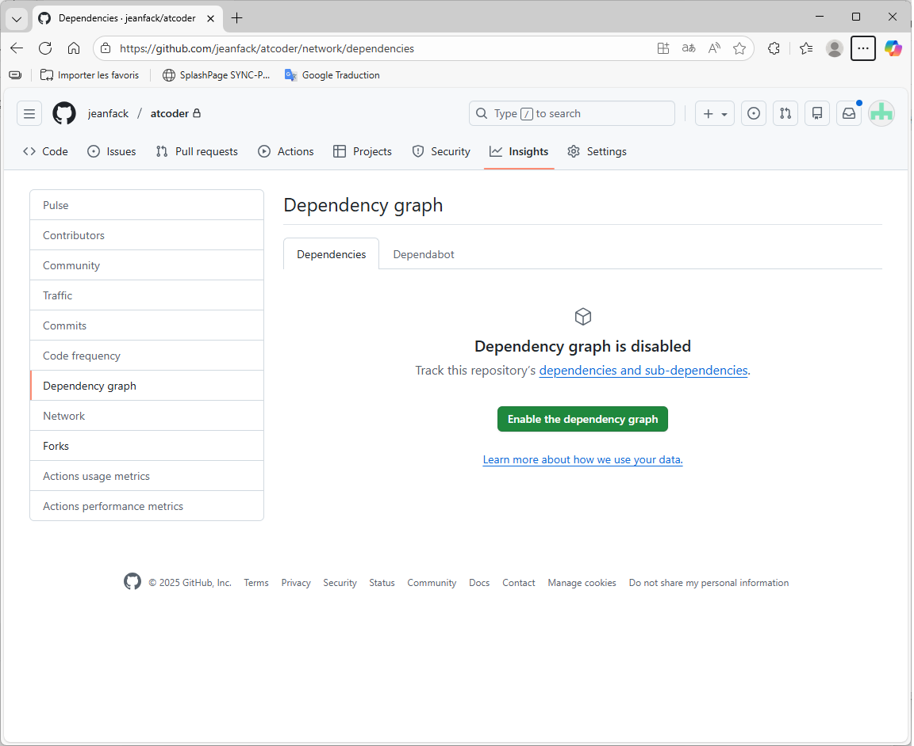

Insights
Overwiew
Peter Griffin is managing a software development project on GitHub and wants to gain insights into the project’s progress by viewing and customizing charts built from the project’s data.
Who can use the Insights feature for Projects on GitHub?
Only people with write or admin access to the project.

Lois wants to analyze the performance of tasks within her GitHub project using insights.
However, she wonders: What does Insights for Projects on GitHub not track?
Items that have been archived or deleted.
Pulse
What is the purpose of the Pulse feature on GitHub ?
To view a summary of a repository’s pull request, issue, and commit activity.
Lois, a project manager, wants to get a quick summary of her team’s recent activity on a GitHub repository.
She needs to see information about open and merged pull requests, open and closed issues, and commit activity ?
Pulse
How can users access the Pulse feature on GitHub ?
By navigating to the Insights tab in the repository and selecting Pulse.
Contributors
Barbara Pewterschmidt is a project manager overseeing a GitHub repository for a software development project.
She wants to acknowledge and recognize the top contributors to the project.
Where can Barbara view the top 100 contributors to the repository, excluding merge commits and empty commits ?
Contributors graph
Meg is a developer who has been actively contributing to a GitHub repository, but she notices that her contributions are not showing up in the contributors graph.
She wants to troubleshoot the issue.
What could be a possible reason why Meg’s contributions are not appearing in the repository’s contributors graph?
Meg’s commits haven’t been merged into the default branch.
If you don’t appear in a repository’s contributors graph, it may be because:
You aren’t one of the top 100 contributors.
Your commits haven’t been merged into the default branch.
The email address you used to author the commits isn’t connected to your account on GitHub.
Mort Goldman is a GitHub user who has been working on a project and making commits to the “gh-pages” branch.
However, he notices that his contributions don’t show up in the repository’s contributors graph.
Why might commits on the “gh-pages” branch not appear in the repository’s contributors graph on GitHub ?
The “gh-pages” branch is not a default branch of the repository.
Community
Traffic
Adam West is a project manager for a software development team using GitHub to host their repositories.
He wants to analyze the traffic to their project repository and understand where the visitors are coming from and which content is generating the most interest.
Which GitHub feature should Adam use to get this information ?
Traffic
How frequently does the information in the referring sites and popular content sections of GitHub’s traffic graph update ?
Daily
The referring sites and popular content sections of GitHub’s traffic graph update on a daily basis.
However, full clones and visitor information are updated hourly.
Commits
How can you visualize commits made to a repository over the past year on GitHub ?
Through the Commit graph, which displays commits by week.
The Commit graph on GitHub allows users to visualize all commits made to a repository in the past year, excluding merge commits.
It shows commits for the entire year by week, providing insights into the repository’s commit frequency and activity over time.

Meg, a developer, wants to analyze the commit patterns of a GitHub repository for a specific week to understand the average number of commits made each day.
Which graph should Meg refer to in order to see this information ?
Commit graph
Code frequency
Peter, a software engineer, wants to analyze the changes made to a GitHub repository.
Code frequency graph
Dependency graph
Peter wants to know which repositories and packages are dependent on his open-source project hosted on GitHub. Which feature should he use ?
Dependency Graph
How does GitHub help reduce the overhead of staying on top of security considerations for project dependencies ?
By offering dependency graphs and automated dependency alerts.
When is the dependency graph automatically updated ?
When a change is pushed to the default branch affecting manifest or lock files.
Lois is a developer working on a project hosted on GitHub.
She wants to identify all the dependencies her project relies on. Which feature should she use ?
Dependency Graph
Lois can use the Dependency Graph feature on GitHub to identify all the project’s dependencies. This feature provides a summary of the manifest and lock files stored in the repository and any submitted dependencies. It supports various package ecosystems and displays dependencies and dependents, along with license information and vulnerability severity.
Dependabot
What’s the best way to ensure that you’re integrating the most secure versions of your project dependencies ?
Enable Dependabot for your repository.
Network
Barbara is a developer working on a collaborative project hosted on GitHub.
She wants to visualize the branch history of the entire repository network to understand the recent commits and branches.
Which feature should Barbara use to view the branch history of the entire repository network, including fork branches ?
Network graph
What information does the network graph of a repository on GitHub display ?
The branch history of the entire repository network, including fork branches.